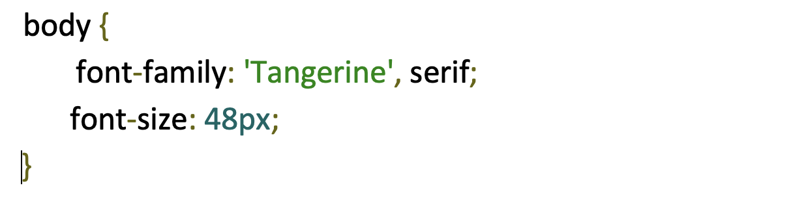

Web font embedding services Google Web Fonts (GWF) or Typekit are systems which allow the use of fonts hosted on their servers. GWF is free to use, does not require you to have an account, and has no limit on traffic or domains unlike Typekit. Typekit sets the cost of the service according to the number of domains in which the font is used, or the site’s monthly traffic. One of the most valued characteristics of GWF is the option to download a desktop version of the fonts for use in the project design phase.
Implementation
It really is quick and simple:
1. Choose a font. You can add it to your collection or use “quick-use” to generate the code and options
for that font.
2. Copy and paste the code generated into your
3. The font is now accessible in your CSS code
Here you can consult a extended manual for styles, script subsets, and
using multiple fonts.
Top recommended fonts from Google Web Fonts
You will find many unfavorable reviews about the quality of GWF’s fonts and the amateur nature of
many typefaces. We must remember that Google Web Fonts is a collaborative open source project, but
many people think still there should be a higher level of quality control.